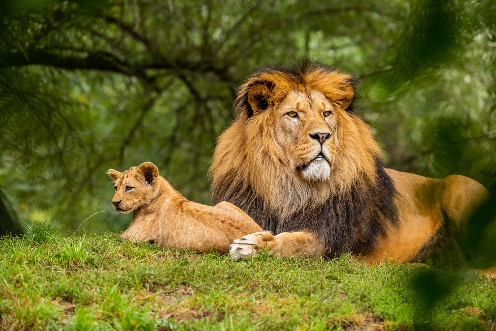

| MORE NEWS ON SAFE COMPUTERS | HOW TO CONSERVE ENVIRONMENTAL PLACE | LIFE OF WILD ANIMALS |
| |
 |
| People also ask What is computer virus in simple words? Definition: A computer virus is a malicious software program loaded onto a user's computer without the user's knowledge and performs malicious actions. ... It can self-replicate, inserting itself onto other programs or files, infecting them in the process | Human existence is quite impossible without the presence of a healthy ecosystem. Our environment comprises all living and non-living components and their interactions within a natural habitat. Environmental conservation has become one of the core issues that need to be addressed to battle climate change and global warming. Sustainable development is the need of the hour which can save the mother earth from the repercussions of industrialization. In this blog, we will aim to elaborate upon environmental conservations, its needs as well as methods. Read In: | A wild animal is an animal that is, well, wild. This means that it isn't tame and it lives on its own without any help from people. A wild animal finds its own food, shelter, water and all its other needs in a specific natural habitat. ... Wild animals make their home in both the city and the country. |
Direct child elements(s) of the grid container automatically becomes grid items.
Item 1, 2, and 5 are set to span multiple columns or rows.